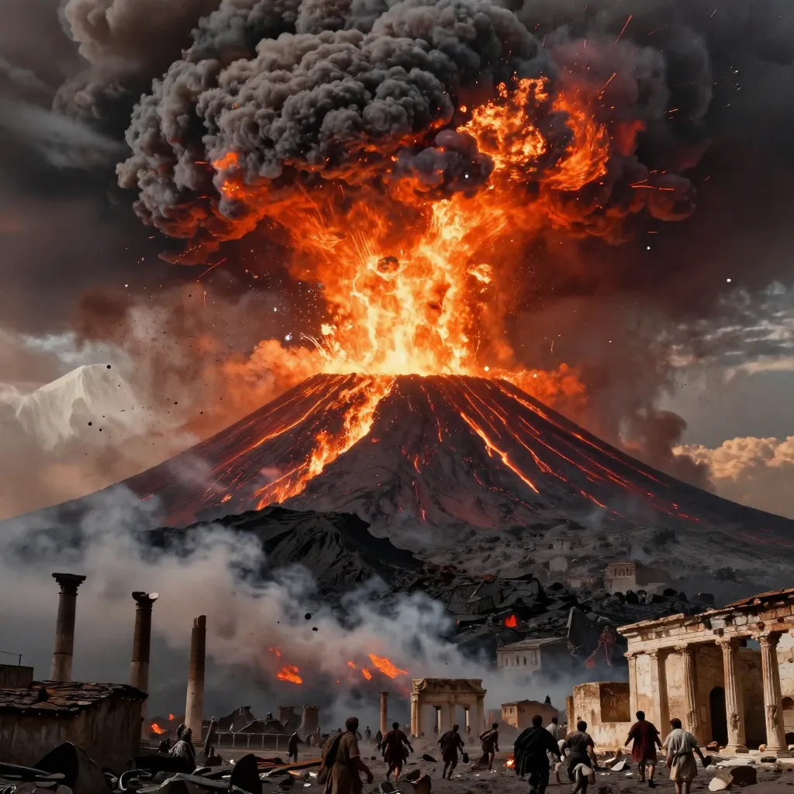

Pompeii: The City Frozen in Ash for 1,700 Years That Changed How We See Ancient Rome

A boy at Misenum
It was a day in the year 79 CE. A 17-year-old Roman named Pliny the Younger was staying with his mother and his uncle at Misenum, a Roman naval base. Across the Bay of Naples, about 29 kilometers away, stood Mount Vesuvius. Above it, a strange cloud was growing.
His uncle, Pliny the Elder, commanded the Roman fleet. He was also a famous writer about nature. When he saw the cloud, he ordered ships made ready. He sailed toward the eruption to look closer and to rescue friends. He died on the shore at Stabiae. Experts are not sure of the cause.
The boy stayed behind and watched. About 25 years later, he wrote two long letters to the historian Tacitus about what he saw. They are vivid, and surprisingly scientific. He wrote about the earthquake shaking the ground, the swaying buildings, the sea pulling back from the shore, and the darkness that fell over the land.
Thanks to him, the eruption of Vesuvius is one of the best-recorded disasters of the ancient world. Let us follow it, hour by hour.
A quiet mountain wakes up
Vesuvius had been quiet for a long time before 79 CE. But the mountain was not dead. A huge pool of hot melted rock, called magma, was building up pressure underneath. In the years before, earthquakes shook the area. A major one in 62 CE damaged the city of Pompeii.
The eruption began in the early afternoon. A column of pumice, ash, and burning gas shot 33 kilometers (21 miles) into the sky. Pumice is a light rock full of tiny holes, made when lava cools quickly. At the top, the column spread out like an umbrella pine tree. Pliny described this shape. Today, scientists call this kind of eruption a Plinian eruption.
For hours, pumice and ash fell on Pompeii. This first fall left about 2.8 meters (9 feet) of pumice and ash on the south side of the volcano. Many people had already fled. Others stayed, by choice or because they could not leave. They hid in their homes as the pumice piled up.
Then, in the early hours of the next morning, everything changed.
The burning avalanche
The tall column of ash fell in on itself. This sent a pyroclastic surge down the sides of Vesuvius. That is a burning avalanche of gas, ash, and pieces of rock.
It raced down at great speed. One study estimates that the first surge to reach Pompeii was about 300 degrees Celsius (570 degrees Fahrenheit). Anyone still alive in its path died almost at once. The ash that came after covered the bodies.
At its peak, the volcano threw out pumice and ash at 1.5 million tons per second. Its heat energy was about 100,000 times that of the Hiroshima and Nagasaki bombs together.
Nobody knows exactly how many people died. Experts guess that 1,500 to 3,500 died in the area. Some say that up to 16,000 may have died. About 1,500 bodies have been found. Within about a day, a busy city of 10,000 to 20,000 people was buried. Pompeii was not the only town in danger, though.
Two towns, two fates
Pompeii and the nearby coastal town of Herculaneum were destroyed by the same eruption. But they were destroyed in different ways.
Pompeii lay southeast of the crater. It was buried mainly in pumice and ash that fell from the sky in the first phase, and then by surges. Many buildings kept their walls, and some kept their upper floors. The blanket of volcanic material protected them.
Herculaneum was much closer to Vesuvius. It stood right in the path of the pyroclastic flows. It lay under up to about 20 meters (70 feet) of volcanic material. This was thicker and hotter than the pumice that covered Pompeii. The great heat turned wood, furniture, and papyrus scrolls into charcoal. This kept them in a form that would not have lasted in the cooler burial of Pompeii.
For a long time, people believed that most of the people of Herculaneum had escaped. That changed in 1980. Archaeologists digging at the old shore found about 300 skeletons in arched vaults near the beach. These people had probably run to the shore, hoping to escape by sea. The surge swept through the vaults with great heat.
The most haunting finds at Pompeii are people too.
Faces of the past
When the surge struck, the last residents fell where they stood. The ash hardened around them. Over the centuries, their bodies broke down. They left hollow spaces in the ash. These kept the exact pose of each person, and even the folds of their clothes. The spaces lasted for about 1,700 years.
In 1863, an Italian archaeologist named Giuseppe Fiorelli took charge of the digs. He had an idea that changed archaeology. Diggers sometimes broke into empty spaces with bones inside. Fiorelli realized that these spaces were molds of the bodies. He began pouring liquid plaster into them and letting it set. Then workers carefully chipped away the ash.
What they found was astonishing. The plaster copies showed the victims in their final poses. The most famous group of casts is in the Garden of the Fugitives. It is named for thirteen bodies found where they fell. Over 1,000 victims have been found at Pompeii. A little over 100 casts have been made.
But the city has more to show than its last moments. It also shows how people lived.
Bread, snack bars, and rude notes
The ash that killed the city also protected it. Pompeii lay buried and forgotten for nearly 1,700 years. In 1592, the architect Domenico Fontana was digging a channel for water. He found painted walls and writing. Nobody linked them to the lost city. Digging at Pompeii began in 1748. These early digs were mostly searches for valuable objects. Later, Fiorelli turned Pompeii from a place of looting into a science project. He divided the city into districts and recorded the buildings.
Slowly, a Roman town appeared, sealed like a time capsule. Everyday objects lay where their owners had last used them. Archaeologists have mapped about 39 bakeries. Burned bread has also been found.
The city had thermopolia, which were the fast-food shops of ancient Rome. Their serving counters had built-in jars called dolia. These held food and wine. Pots held goat, pig, duck, fish, and snails. Archaeologists have found 89 thermopolia so far. This shows how many people ate out instead of cooking at home.
Writing covered the walls all over the city. There are insults, boasts, love notes, political slogans, and ads for gladiator games. The political writing shows that elections were hotly fought. It gives an honest look at private Roman life.
Not all of the writing was on walls. Some was on scrolls, and those were found in a different town.
Scrolls that waited
In 1750, farmers digging a well found a huge country house at Herculaneum. Tunnels were later dug there in the 1750s. The house held a library of more than 1,800 scrolls of burned papyrus. Papyrus is an old kind of paper made from a plant.
This was the Villa of the Papyri. It may have belonged to Lucius Calpurnius Piso Caesoninus, the father-in-law of Julius Caesar. It is the only library from the ancient world that survives whole.
The surge had turned the scrolls to charcoal. They were rolled into lumps so fragile that trying to unroll them ruined the writing. For more than two centuries, scholars could unroll and read only a small part. Much of what they read was Epicurean philosophy by the Greek thinker Philodemus.
But in recent years, things have changed. Researchers now use X-ray scans and machine learning, which is a way of teaching computers to find patterns. With these, they have begun to read scrolls without unrolling them. In 2023, a contest called the Vesuvius Challenge offered prizes for reading the scrolls with AI. A student, Luke Farritor, found the Greek word for “purple” inside an unopened scroll. In February 2024, a team of three won the grand prize for reading whole passages. The text talks about pleasure and food, which fits Epicurean thought.
What if the library holds lost works by famous writers? Nobody knows.
What we know, and what we do not
Let us go back to the boy at Misenum. He saw a cloud and a dark sky. We know much more than he did. We know what the city ate, how people decorated their walls, and the jokes they scratched on them. Few ancient sites show ordinary life so closely.
But some things are still open. Scholars still argue about the true date of the eruption. In 2018, a charcoal writing was found on the wall of a house that was being repaired. It gave a date that matches October 17. Some scholars think that the eruption came in the autumn, not on August 24. The August date comes from a printed copy of Pliny’s letter.
About two-thirds of Pompeii has been dug out. The last third is still buried. People argue about whether it should be dug at all. And the mountain is still there, and it is still active. It could erupt again. Many people live near it today.
So the story is not only about the past. The boy at Misenum wrote down what he saw so that people would remember. We still read his letters today.
References & Further Reading
Archaeology magazine: Pompeii's bread and bakeries — About 39 bakeries mapped, carbonized bread
TheCollector: Fast food in ancient Pompeii — 89 thermopolia, the dolia, food found in pots
📚 Recommended Reading: Pompeii: The Life of a Roman Town by Mary Beard (on Amazon) — As an Amazon Associate, we earn from qualifying purchases.
Editorial note: The eruption of Vesuvius in 79 CE and the loss of Pompeii and Herculaneum are certain. The exact date of the eruption, the number of dead, and the owner of the Villa of the Papyri are still argued about. See our Editorial Policy.